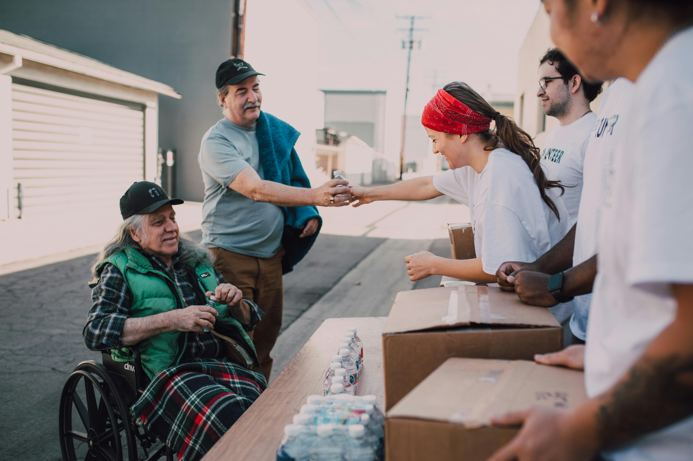

About Us
Building a stronger, more connected Morris County
A community-driven resource hub making it easier for residents to find support and for neighbors to give back in meaningful ways.
Quick Facts
- Focused exclusively on Morris County, NJ
- All resources reviewed before listing
- Community-submitted & community-maintained
- Free to use: no accounts, no ads
- Built with accessibility in mind
Our Purpose
Why CareMap Morris exists
Finding local support shouldn't require hours of searching scattered websites and outdated PDFs. We built CareMap Morris to change that at one neighborhood at a time.
The gap between need and knowledge
Many Morris County residents who qualify for local support simply don't know it exists. CareMap Morris bridges that gap by putting everything in one searchable, up-to-date place.
Making giving back easy
Wanting to help and knowing how to help are two different things. CareMap Morris makes it simple to find volunteer opportunities that match what you have to offer.
Serving people in vulnerable moments
When someone is facing a crisis, the last thing they need is confusion. CareMap Morris is designed to be clear, calm, and easy to navigate, even under stress.
A living, community-driven resource
Unlike a static pamphlet, CareMap Morris grows with the community. Organizations submit themselves, residents suggest updates, and our review process keeps things accurate.
Community volunteers at a Morris County food distribution event
Our Standards
How resources are vetted
Every organization goes through a review process before appearing in the directory. Here's how we keep the information trustworthy.
Submission
Anyone can submit a resource. We collect the organization name, type, services offered, location, contact details, and donation or volunteer opportunities.
Initial Review
Our team checks that the organization serves Morris County, provides a legitimate community benefit, and has verifiable contact information.
Verification
We cross-reference submissions against public nonprofit registries, official websites, and community sources to confirm the organization is active.
Live & Maintained
Approved listings go live. We periodically re-verify listings and welcome community flags if any information becomes outdated.
See something outdated? If a listing has incorrect hours, a changed address, or is no longer operating, please submit an update so we can keep the directory accurate for everyone.
Our Focus
Why Morris County
Morris County is one of New Jersey's most affluent counties, but prosperity isn't evenly shared. Behind the well-known towns and busy commuter corridors are families navigating food insecurity, housing instability, domestic violence, and lack of access to mental health services.
Many of the county's most vulnerable residents fall into what's sometimes called the "invisible poor", people who earn too much to qualify for some federal programs but not enough to meet basic needs in a high cost-of-living area. Local nonprofits fill that gap, but they're chronically under-resourced and underexposed.
CareMap Morris exists to give those organizations visibility, connect them with donors and volunteers, and make their services easier to find for the people who need them most.
"The people who need help most are often the least visible and the resources that could help them aren't much more visible."
— CareMap Morris mission statement

Community outreach in action — neighbors helping neighbors
Want to help strengthen this resource?
CareMap Morris grows through community participation. Know of a local organization that should be listed? Submit it for review. Want to give back? Browse volunteer opportunities across Morris County.